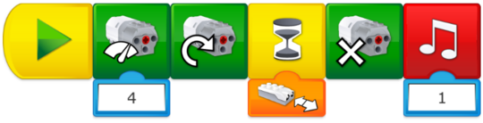

Programming Help
Program Milo to Detect the Plant Specimen
When the green arrow is tapped:
-
Start program
-
Start motor at power 4
-
Start motor that way
-
Wait for Motion Sensor to detect the object
-
Stop motor
-
Play sound 1

Make sure that your students are using the correct input for the Motion Sensor. You can change the mode by tapping on the input. Using a different mode will make Milo react differently.